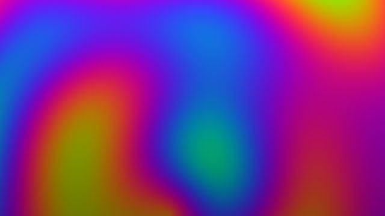
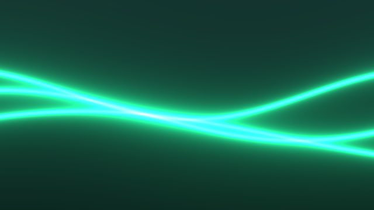
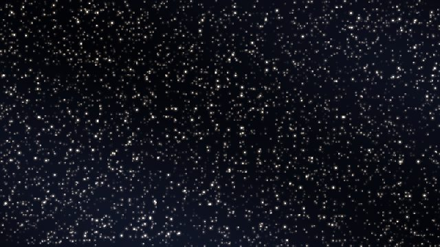
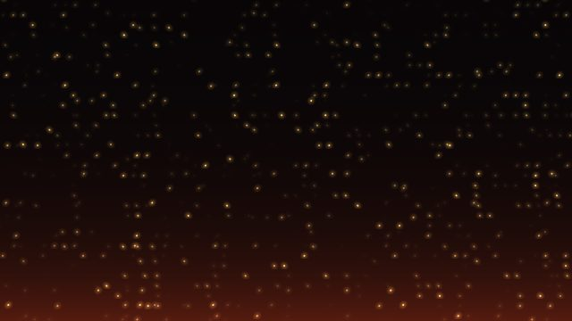
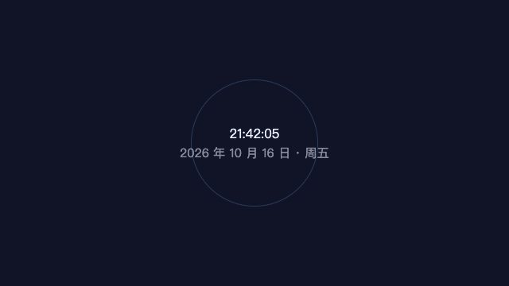

动态壁纸，
钉在图标下面。
Gesso 是一款 Windows / macOS 动态壁纸引擎：视频、GIF、着色器、网页，钉在桌面图标之下。
页面里跑的是 Gesso 预置的着色器与网页壁纸；首次启动共注册十款，图标照常点击。





什么都能当壁纸。
- 视频 mp4 / webm
- 能用。系统播放器直接放，流畅省电。
- 着色器 glsl
- 能用。实时演算的动画，Aurora 就是这种。
- 网页 html / 网址
- 能用。贴个网址就行，不占磁盘空间。
- Wallpaper Engine
- 选中 project.json 就能导入，只读取原文件夹。
该省电时，它自己让路。
- 打游戏、看视频，壁纸自动暂停
- 用电池时，降到每秒 5 帧
- 暂停就是真的停了，不是画面冻住
回到桌面，它接着播。
它替你管好的事。
- 打游戏看视频，壁纸自动让路。全屏应用在前台时自动暂停；回到桌面接着播。
- 每块屏，一张壁纸。显示器插上拔下、改分辨率，壁纸都会回到原来的位置。
- 菜单栏随手控制。暂停、换一张、打开壁纸库，都在菜单栏里。
- 壁纸碰不到你的系统。在隔离环境里运行，不联网上传、没有遥测；代码全部开源。
怎么工作。
- 加壁纸。拖个文件，或贴个网址，都行。
- 选屏幕。把卡片拖到目标屏，松手就好。
- 各就各位。图标留在最上面照常点，壁纸在最下面铺满整块屏。
- 平时。菜单栏一点就能暂停、换一张；重启电脑，一切照旧。
装它之前，常被问到的。
macOS 第一次打开被拦？
未签名构建：右键 → 打开 → 打开，一次即可；或 xattr -dr com.apple.quarantine /Applications/Gesso.app。
Windows 弹 SmartScreen？
「更多信息」→「仍要运行」，同样是一次性放行。
支持 Wallpaper Engine 吗？
支持主动导入的 video / web 两类，只读引用原目录；不扫描、不连创意工坊。
多显示器？
每块屏独立会话；Windows 多显示器机型仍在实机回归的路上。
Linux？
v1 不做，先把 macOS 和 Windows 做扎实。
十款壁纸已经内置，
下载就能换上。
下载 Gesso v0.1.3
macOS .dmg 与 Windows 安装包 / 绿色版；未签名构建，首次打开放行一次即可。